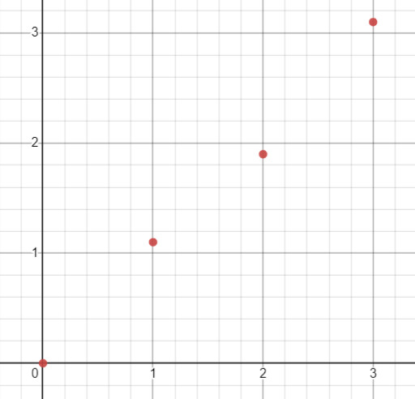
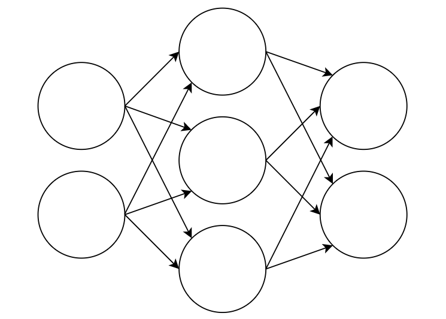
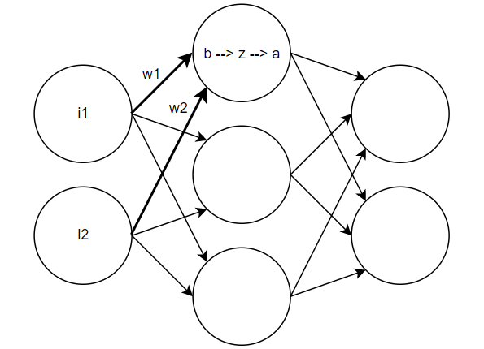

Maybe you're interested in neural networks, but don't understand them. Maybe you've tried using something like pytorch, but want to understand the underlying math. If you fit that description, this is for you! I am going to explain neural networks with math, diagrams, and code.
It's a function, and it maps inputs to outputs. That's it.
For learning purposes, let's look at an extremely simple function. f(x) = a*x, where a is some parameter that we don't know yet. Say we have some data, and we want to find the value of a that best fits the data. Let's say we have the following data.
We can plot this data to get a better idea of what it looks like.
We can see that this is roughly linear, and a good approximate of a is 1. Therefore the function would be roughly f(x) = 1*x. Great! Now we have "learned" the function. When a neural network "learns", it is a lot like finding parameters that fit a function to data. Soon, we will see more on how to figure out the parameters.
A neural network can be represented as a network of neurons. Here is a neural network with 3 layers.
Each circle is a neuron. Each line is a connection between two neurons.
The first layer is called the input layer. In this example, the input layer has 2 neurons, so our function can take in 2 inputs. The third layer is the output layer, so our function has 2 outputs. Any layers in between are called hidden layers by convention.
Here you can see w1 and w2 are bolded. These are the weights for the neurons they are attached to. Each neuron also has a bias (b), except for the input neurons. To calculate z, we take the weighted sum of the inputs, and add the bias. z = w1*x1 + w2*x2 + b. Then we apply an activation function to z. In this example, we use ReLU for the activation function. a = ReLU(z).
The purpose of the activation function is to introduce non-linearity into the function. Without some non-linearity, the overall function of the neural network would be linear, and we would only be able to learn linear data. One common activation function is called ReLU, and it is defined as follows.
ReLU(z) = max(0, z).
This means that if z < 0, the output is 0. If z >= 0, the output is z. This is a very simple activation function, but it is indeed non-linear. Another advantage of ReLU is that it is fast to compute, so we can make large neural networks with many layers and neurons.
We continue calculating z and applying the activation function for each neuron in layer 2. Then we use the output of layer 2 as the input of layer 3. Finally, we get the output of layer 3, which is the output of the whole neural network.
The parameters of the function are the weights and biases. We want to find the values of the weights and biases that best fit the data.
Think back to the linear function example where we we had one parameter a. With a neural network, we have a lot more parameters to learn. A naive approach would be to try every random combination of weights and biases, and see which one fits the data best. This is called brute force, and it is very slow. We can use a systematic approach to find good paramters in a reasonable amount of time.
If you remember some calculus, you might remember that the derivative tells us the slope at a point. In other words, the derivative tells us how much the function changes when we change the input. A gradient is essentially a derivative for a function with multiple variables. Neural networks have many parameters, so we need to use gradients.
Definition: The gradient vector is the vector pointing in the direction of the greatest rate of increase.
You might also remember optimization problems from calculus. An optimization problem is a problem where we want to find the minimum or maximum of a function. In this case, we want to find the parameters that minimize the error of the neural network. So, what is the error function that we are trying to optimize?
The error of the neural network is the difference between the output of the neural network and the actual output. We can use the squared error function, which is defined as follows.
E = (actual - expected)^2.
To solve this optimization problem, we can use an algorithm called gradient descent. First, we start with some random parameters. Then, we calculate the gradient of the error function with respect to the parameters. Remember, the gradient points toward the fastest rate of increase. We then take a step opposite the direction of the gradient, becaues we want to minimize. This is called gradient descent because we descend in the direction of the gradient. With each step, we get closer to the optimal parameters of the neural network.